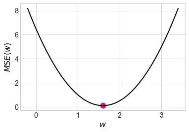
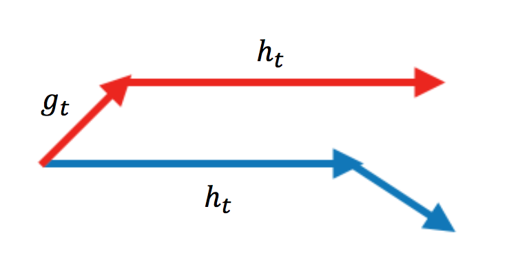

1. Пятьдесят оттенков градиентного спуска#
Маша Нестерова, хозяйка машин лёрнинга, собрала два наблюдения: \(x_1 = 1, x_2 = 2\), \(y_1 = 2, y_2 = 3\). Она собирается обучить линейную регрессию \(y = w \cdot x\). В качестве функции потерь она использует квадратичную функцию потерь, \(MSE\).
а) Найдите теоретическую оценку неизвестного параметра \(w\). Для этого выпишите функцию потерь, по-честному возьмите от неё производную, приравняйте её к нулю и решите получившееся уравнение.
Решение
Вспомним математику из старших классов. Для того, чтобы найти оптимум функции, надо взять производную и приравнять её к нулю.
Берём производную, решаем уравнение и получаем ответ:
Убедимся в том, что это точка минимума. Для этого возьмём вторую производную и посмотрим на её знак
Видно, что мы действительно в точке минимума.
{kind=link}
б) Сделайте три шага градиентного спуска. В качестве стартовой точки используйте \(w_0 = 0\). В качестве скорости обучения возьмите \(\eta = 0.1\).
Решение
Чтобы сделать три шага градиентного спуска, нужно найти градиент. Наша функция потерь выглядит как
Мы подбираем один параметр, значит градиентом в данном случае будет просто одно число — производная по этому параметру.
Градиент – направление наискорейшего роста функции. Чтобы минимизировать функцию, будем идти в направлении антиградиента с какой-то скоростью обучения \(\eta.\) Стартовая точка \(w_0 = 0\). Мы хотим сделать шаг
Посчитаем градиент в точке \(w_0\) по всей выборке:
Делаем первый шаг:
По аналогии, второй шаг:
По аналогии, третий шаг:
{kind=link}
Почти добежали до оптимальной точки. Чем ближе мы к точке оптимума, тем меньше значение градиента и тем меньше наши шаги. Тем не менее, если не аккуратно выбрать скорость обучения \(\eta\), можно случайно перепрыгнуть оптимум либо вообще не дойти до него за обозримое число итераций.
в) Сделайте четыре шага стохастического градиентного спуска (stochastic gradient descent, SGD). Пусть в SGD сначала попадает первое наблюдение, затем второе.
Решение
Теперь то же самое, но градиентный спуск стохастический. Считать градиент по всей выборке – дорого. Нужно найти его для каждого наблюдения, а затем посчитать среднее. На каждой итерации сложность по времени такого алгоритма будет \(O(n).\)
Стохастический градиентный спуск, SGD, предлагает считать градиент в случайной точке и делать шаг. Тогда на каждой итерации сложность по времени будет \(O(1).\) Нам придётся сделать больше шагов, траектория будет более шумной. Однако практика показывает, что такой алгоритм сойдётся быстрее. Обычно градиент оценивают не по одному наблюдению, а по небольшой случайной подвыборке, батчу.
Первый шаг:
Второй шаг:
Третий шаг:
Четвёртый шаг:

г) Если вы добрались до этого пункта, вы поняли градиентный спуск. Маша довольна. Начинаем заниматься тупой технической бессмыслицей. Сделайте два шага Momentum SGD. Возьмите \(\alpha = 0.9, \eta = 0.1\)
Решение
Momentum SGD[1] — то же самое, но с учётом инерции. В переменной \(h_t\) мы будем копить свои знания о градиенте, а затем делать шаг на накопленную величину. Параметр \(\alpha\) тут отвечает за забывание накопленной инерции.
На первом шаге инерция нулевая, мы только начинаем её копить:
На втором шаге появляется накопленная инерция \(\alpha \cdot h_{t-1}\):
Инерция довольно сильно ускорила наше движение и мы перелетели точку оптимума. На следующих шагах мы развернёмся и пойдём в обратном направлении. В итоге мы будем оказываться в точке оптимума быстрее, чем в случае SGD.
д) Сделайте два шага Momentum SGD с коррекцией Нестерова.
Решение
Nesterov SGD работает как momentum, но мы при этом пытаемся смотреть себе под ноги. Мы всё-равно сделаем шаг на величину инерции. Имеет смысл сразу же считать градиент в той точке, где мы окажемся после этого шага.
Раньше мы ходили по красной траектории. Мы искали градиент в той точке, где мы стоим, ходили по нему и по инерции. Теперь мы будем ходить по синей траектории. Сначала делаем шаг по инерции, а затем находим градиент и делаем ход по нему. Благодаря этому алгоритм будет сходиться быстрее.
{kind=link}
Первый шаг никак не изменится, на втором шаге мы должны посчитать значение градиента немного в другой точке
Видно, что мы движемся более аккуратно по сравнению с momentum и не перелетаем точку оптимума на втором шаге.
е) Сделайте два шага RMSprop. Возьмите \(\alpha = 0.9, \eta = 0.1\)
Решение
Смысл RMSprop заключается в том, чтобы для каждого параметра ввести свою, индивидуальную скорость обучения. В формулах появляется индекс \(j,\) который отвечает за конкретный параметр. Здесь \(g_{j,t} = \nabla_{w_j} L(w_{t}).\)
Если у нас есть случайная величина \(X\) и мы хотим посчитать для неё дисперсию, мы можем это сделать по формуле \(Var(X) = \mathbb{E}(X^2) - \mathbb{E}^2(X).\) Величина \(g_{j,t} = \nabla_{w_j} L(w_{t})\) — это оценка градиента, то есть оценка для \(\mathbb{E}(\nabla_{w_j} L(w_t)).\) Величина \(g^2_{j,t}\) будет оценкой для второго момента, а это почти дисперсия. Отметчу, что это ни в коем случае не формальное доказательство, а «показательство».
Получается, что в первой формуле мы для каждого параметра оцениваем, насколько большой разброс у его градиента в текущей точке. Если разброс большой, мы делаем шаги медленно, так как величина \(v_{j,t}\) в знаменателе оказывается высокой и скорость обучения для параметра \(w_j\) оказывается низкой. По аналогии, если разброс не такой большой, мы движемся более широкими шагами.
Первый шаг:
Второй шаг:
ж) Сделайте два шага Adam. Возьмём \(\beta_1 = \beta_2 = 0.9, \eta = 0.1\)
Решение
Adam комбинирует в себе градиентный спуск с инерцией и индивидуальной скоростью обучения. Формулы для пересчёта немного другие. Множитель в знаменателе нужен для того, чтобы оценка градиента не съезжала и оставалась несмещённой. Подробнее об этом будет в одной из задачек со звёздочкой.
Первый шаг:
Второй шаг:
з) В Rmsprop и Adam мы находим индивидуальные скорости обучения для всех параметров, корректируя их на второй момент градиента. Кажется, что хорошо было бы корректировать их на настоящую дисперсию, а не на второй момент.
Придумайте, как внести в Adam корректировку скорости обучения именно на дисперсию. Выпишите соотвествующие уравнения и получите метод AdaBelief.
Решение
Adam комбинирует в себе градиентный спуск с инерцией и индивидуальной скоростью обучения. Формулы для пересчёта немного другие. Множитель в знаменателе нужен для того, чтобы оценка градиента не съезжала и оставалась несмещённой. Подробнее об этом будет в одной из задачек со звёздочкой.
На картинке ниже сравнивается сходимость разных градиентных спусков между собой. На ней нет Adam, но зато есть несколько других вариаций градиентного спуска, которые мы не разобрали в задачках выше. Они являются вариациями адаптивного градиентного спуска и почитать про них подробнее можно в статье, из которой взята анимация[2].

На картинке видно, что SGD движется в сторону оптимума очень медленно. Momentum у него довольно сильно выигрывает в скорости, однако из-за накопленной инерции, поначалу, momentum уходит куда-то не туда и делает большой зиг-заг. Momentum с поправкой Нестерова делает зиг-заг поменьше и добирается до оптимума быстрее.
В таких методах как Adagrad, Adadelta и Rmsprop скорость обучения подбирается индивидуально для каждого параметра. Мы видим, что эти алгоритмы добегают до точки оптимума быстрее всего.
Adam комбинирует в себе индивидуальные скорости обучения и инерцию. Он будет приходить в точку оптимума быстрее всех. Сегодня, при обучении нейронных сетей, Adam является базовым выбором для обучения нейронок.
Adam – это база. Тем не менее, методы оптимизации не стоят на месте и каждый год появляются более новые модернизации градиентного спуска.